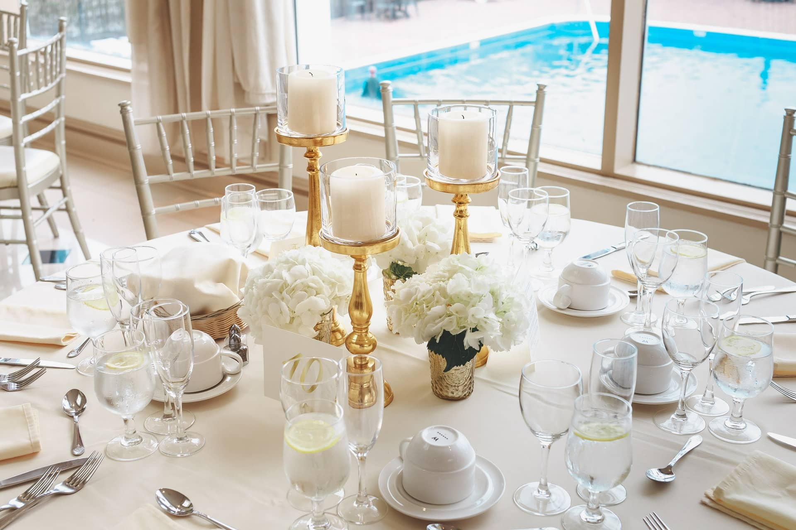
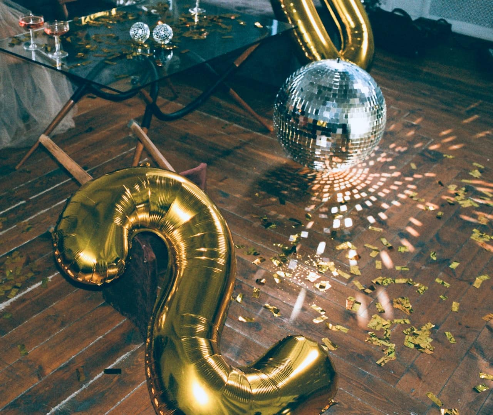

Somos una empresa creativa dedicada a la ambientación de eventos sociales y corporativos. Como profesionales de la decoración entendemos el valor de cada detalle y buscamos estimular todos los sentidos. En Yoko Ambientaciones te ofrecemos propuestas innovadoras y la exclusividad de un trabajo hecho a medida, siempre con el trato cercano que nos caracteriza.
Ofrecemos:
- Luces decorativas, banderines, guirnaldas.
- Centros de mesa con frascos decorados, floreros y portavelas, caminos de arpillera y números de mesa.
- Elementos decorativos como pizarrones, estacas de hierro con floreros o portavelas colgantes.
- Ceremonias: decoración con cortina de grullas, telas blancas y flores.
- Armado de arreglos florales para todo el evento.
- Asesoramiento integral para lograr el ambiente que siempre soñaste.
Ademas nos ocupamos de armar y desarmar todo!
Clickea en las fotos y descubrí nuestro trabajo!
Bodas y Cumpleaños


Eventos Sociales